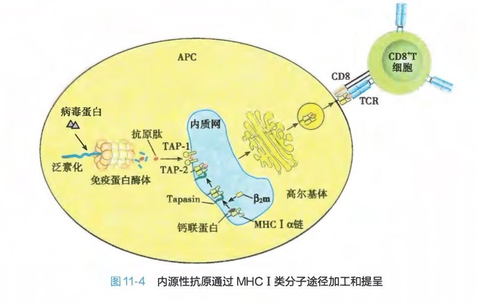
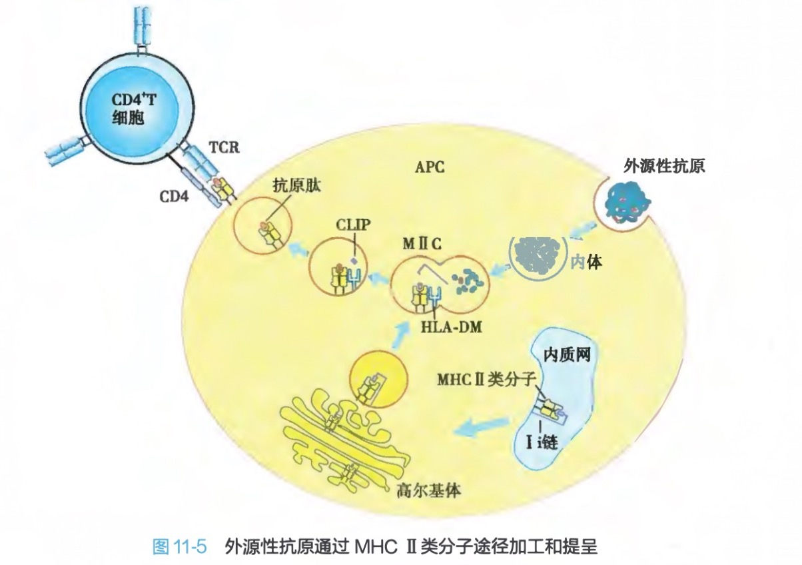
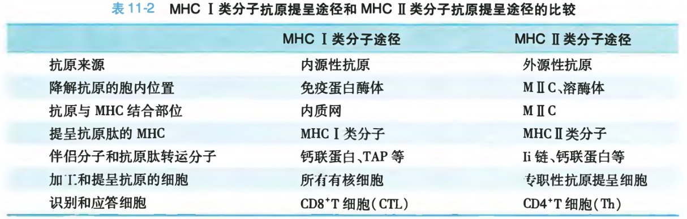

抗原加工和提呈
抗原加工（antigen processing）：APC 将摄取入胞内的外源性抗原或者胞质内自身产生的内源性抗原降解并加工成一定大小的多肽片段、使抗原肽适合与MHC分子结合、抗原肽-MHC 分子复合物再转运到细胞表面的过程。
抗原提呈（antigen presentation）：表达于 APC 表面的抗原肽-MHC分子复合物被T细胞识别，从而将抗原肽提呈给T细胞，诱导T细胞活化的过程。
抗原分类
外源性抗原（exogenous antigen）：细胞外，例如被吞噬的细胞、细菌或蛋白质抗原等。
内源性抗原（endogenous antigen）：细胞内合成，例如病毒感染细胞内合成的病毒蛋白、肿瘤细胞内合成的肿瘤抗原和某些细胞内自身抗原等。
MHC I类分子抗原提呈途径
内源性抗原，所有有核细胞

内源性抗原的加工和转运
- 降解抗原
细胞内蛋白首先与泛素结合，泛素化蛋白呈线性进入蛋白酶体（proteasome）被降解，产生抗原肽，利于转运和与MHC I类分子的抗原肽槽结合。
蛋白酶体：胞内大分子蛋白酶复合体，中空圆柱体结构，负责将胞质中多余的错误合成或折叠的蛋白质降解为多肽。干扰素作用下低分子量多肽取代蛋白酶体催化亚单位变化为免疫蛋白酶体，降解内源性抗原。 - 转运
抗原加工相关转运物（TAP）是由两个6次跨膜蛋白组成的异二聚体，在ER膜上形成孔道，选择性主动转运胞质抗原肽至ER腔内。
MHC I类分子的合成与组装
MHCI类分子
抗原肽-MHC I类分子复合物的形成与抗原提呈
MHC I抗原肽结合槽与抗原肽结合，形成复合物。
过程中，内质网驻留的氨基肽酶（ERAP）修剪抗原肽，羟基氧化还原酶Erp57催化MHC I的二硫键断裂和重建，利于两者结合。
结合抗原肽的MHC I类分子经高尔基体转运至细胞膜上，提呈给CD8
MHC II类分子抗原提呈途径

外源性抗原的加工和转运
APC主要通过模式识别受体（B细胞通过BCR）识别外源性抗原，通过胞饮作用、吞噬作用、受体介导的内吞作用和内化等方式摄取抗原。
- 摄取蛋白质抗原形成的囊泡与内体融合；
- 摄取的细菌等颗粒性抗原在胞内形成吞噬体，吞噬体与溶酶体融合为吞噬溶酶体。
内体和吞噬溶酶体与胞质中的MHC II类小室（M II C）融合，降解抗原。
MHC II类分子的合成与转运
ER中MHC II类分子
抗原肽-MHC II类分子复合物的形成与抗原提呈
在M II C中，HLA-DM分子介导抗原肽结合槽与CLIP解离并结合具有更高亲和力的抗原肽，形成稳定的抗原肽-MHC II类分子复合物。复合物被转运至细胞膜表面，提呈给CD4

MHC分子对抗原的交叉体呈途径
APC能将摄取、加工的外源性抗原通过MHC I类分子途径提呈给CD8
脂类抗原的CD1分子提呈途径
脂类抗原（例如分枝杆菌胞壁成分）不能被MHC限制性T细胞识别。CD1分子结合胞外的脂类抗原或结合进入内体的自身脂类抗原，进行抗原提呈。